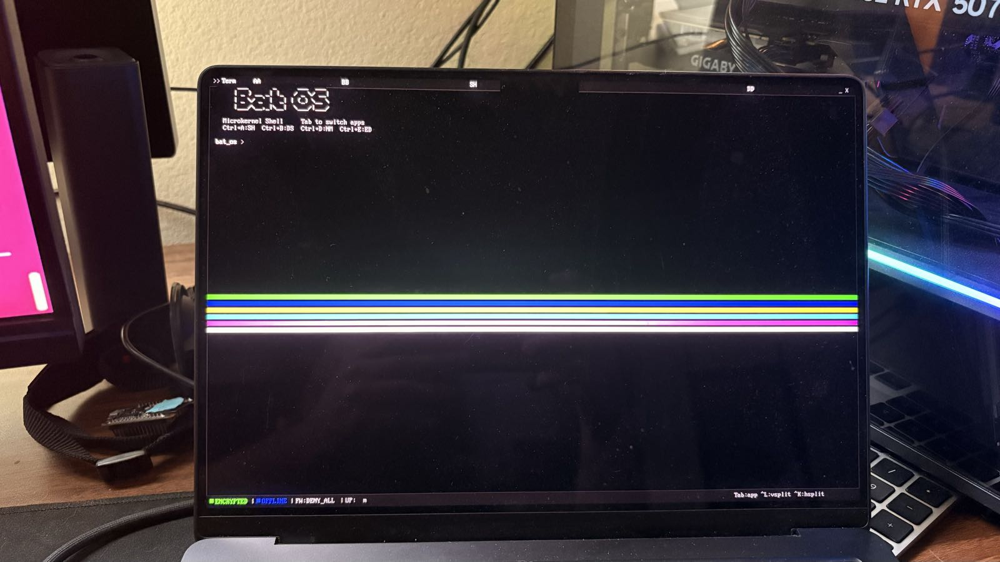
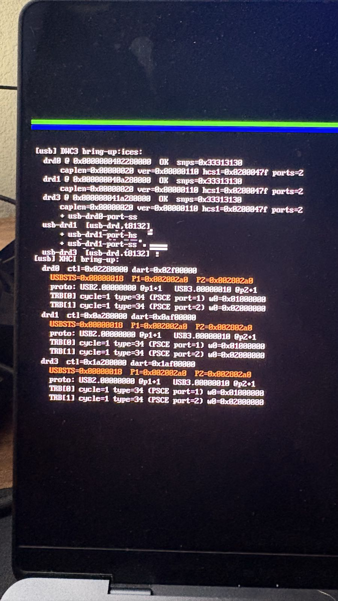
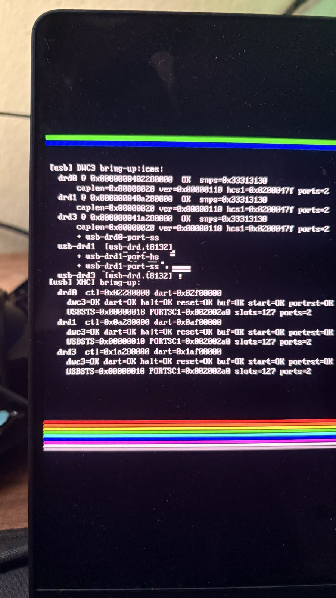
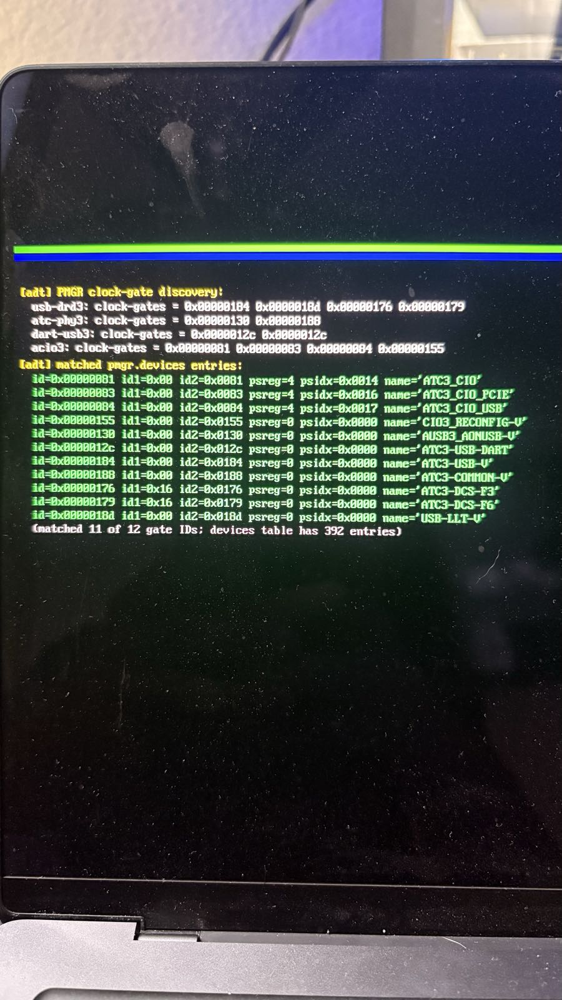
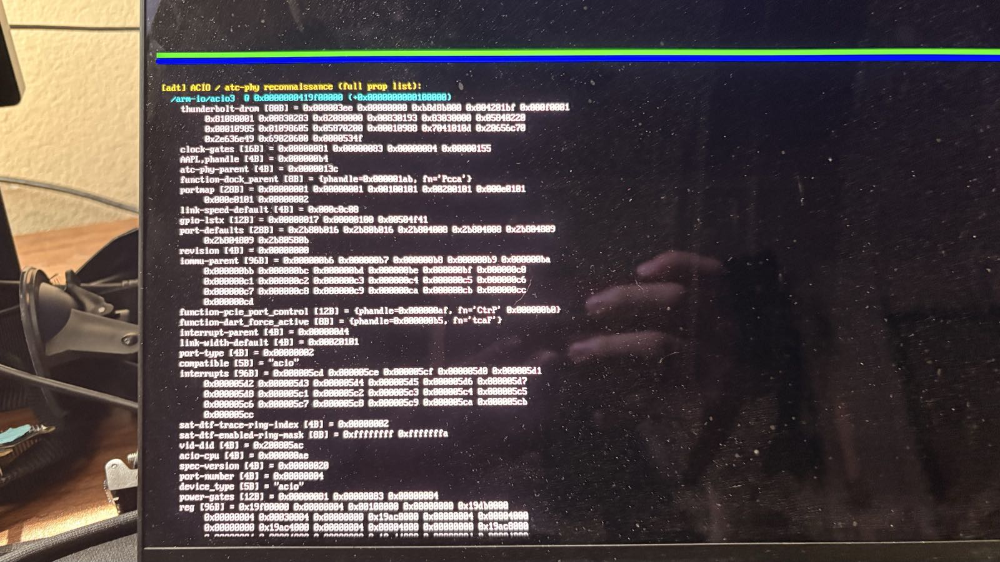

The secure workstation for Apple Silicon.
Sphragis runs bare-metal on Apple M4. No browser. No telemetry. No third-party kernel. Encrypted filesystem, post-quantum TLS, and per-process network isolation enforced in the kernel.
A workstation, not a laptop.
Sphragis deliberately omits a web browser. Browsing belongs on a separate device. What remains is the work that needs strong isolation: drafting, review, encrypted storage, signed communications.
Apple Silicon, without Apple's stack.
Sphragis boots on Apple M4 via an independent reverse-engineering pipeline — no Asahi base, no upstream Linux fork. The Asahi installer doesn't yet support M4; we got there our own way.
Audited from kernel up.
Every cryptographic primitive uses audited RustCrypto implementations. Every panic site has a justification. Every line of source has been linted and clippy-clean. The repository ships with zero warnings.
Four guarantees, enforced in the kernel.
Each guarantee is a property of the kernel, not a userspace convention. Processes cannot opt out, weaken, or bypass them.
SealFS encrypts every file before it touches disk.
AES-256-GCM-SIV (misuse-resistant AEAD) on every block. The master key is derived from your passphrase with Argon2id (8 MiB memory, 3 passes) — six orders of magnitude harder to brute-force than legacy SHA-based KDFs. No file ever lives unencrypted on disk.
Processes never see TLS.
A process opens a host name, gets a plaintext file descriptor, and writes HTTP. The kernel handles the TLS 1.3 handshake — including post-quantum hybrid key agreement (X25519 + ML-KEM-768) — and certificate chain validation. No process can ship broken TLS, skip cert validation, or downgrade to HTTP.
Default-deny egress, per process.
Every network call is evaluated against a per-process policy: allowed hostnames, allowed ports, allowed SNI. A process with no policy entry cannot reach the network. Every denial is audit-logged.
Passphrase, hardware token, duress, dead-man's switch.
Passphrase plus YubiKey OTP, with a configurable duress code that wipes derived keys on entry, and a dead-man's-switch timer that auto-locks after a configurable interval. No silent recovery paths.
Hybrid post-quantum key agreement, in the kernel.
Sphragis implements draft-ietf-tls-ecdhe-mlkem-04 correctly: ML-KEM-768 ciphertext concatenated with X25519 ephemeral public key, with the derived shared secret used as raw concatenation per the standard.
Verified end-to-end against Cloudflare's public PQ research endpoint. Six trust anchors ship with the OS. No fallback paths. No pin-and-pray.
Apple M4 Pro, MacBook Pro 14".
Sphragis boots on real M4 silicon. Not a virtual machine. Not an emulator. Native aarch64 from reset vector to login prompt.
- Booted on real M4 hardware (Mac16,1 / J604 / T8132 "Donan").
- Loads via m1n1 chainload from macOS Recovery; reverts to macOS through the standard boot-picker.
- Native Apple Silicon: bare aarch64. No virtualization. No emulation.
- Driver coverage: dockchannel UART, AIC, PMGR, ATC PHY, DCP framebuffer, DWC3 XHCI USB.
- Asahi Linux explicitly does not support M4. As of 2026, no other non-Apple OS boots on this hardware.
Sphragis's first boot on Apple M4 hardware.
Phone-camera photos of the M4 internal display during the first end-to-end boot of Sphragis on real silicon. 2026-04-17. Power went out before the host could capture frames; these are the durable record of what worked.





Built-in. No third-party dependencies.
A small set of applications ship with the OS — system overview, encrypted vault, signed editor, end-to-end-encrypted comms. Each is part of the kernel image. No package manager. No app store.
Specifications.
A complete picture of the system, kernel to toolchain. Each line is a property of the shipping build, not a roadmap item.
Request evaluation access.
Evaluation builds are issued individually. Tell us a little about your environment and we will reply with next steps and an SHA-256 fingerprint to verify the build against.